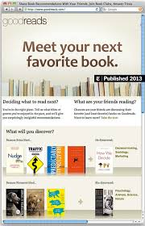
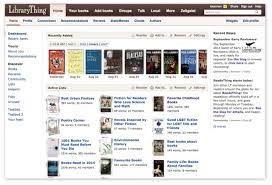

10 situs rekomendasi buku online terbaik
Mencari bacaan musim panas yang bagus? Ingin membaca lebih lanjut tentang topik yang Anda minati atau melihat apa yang baru atau sedang tren di dunia buku? Ada banyak tempat untuk mencari rekomendasi buku di internet. Sebagian besar sederhana dan gratis dan yang terbaik dari semuanya, mereka akan membantu mencegah perasaan penyesalan pembaca, ketika Anda pulang dari toko buku atau perpustakaan, mulai membaca dan menyadari bahwa Anda baru saja menyia-nyiakan waktu dan mungkin uang hasil jerih payah Anda untuk sebuah buku buruk yang tidak Anda minati.
Goodreads lebih dari sekadar situs rekomendasi buku; itu juga merupakan komunitas online resensi dan peringkat buku. Goodreads akan membuat rekomendasi berdasarkan apa yang sudah Anda baca atau apa yang dibaca teman Anda. Goodreads juga menyoroti apa yang sedang tren dan rilis baru yang akan datang. Bangun rak buku, daftar, berpartisipasi dalam diskusi buku, dan terkadang bahkan Tanya Jawab penulis.
LibraryThing sudah ada sejak lama. Faktanya, mereka menganggap diri mereka sebagai klub buku terbesar di dunia dan tentunya memiliki perasaan seperti itu. Tambahkan buku ke katalog Anda dan dapatkan rekomendasi berdasarkan apa yang telah Anda baca atau pilih “rekomendasi anggota” alih-alih rekomendasi LibraryThing untuk mendapatkan alternatif yang berbeda. Anda dapat berpartisipasi dalam grup dan diskusi, serta melihat penulis unggulan dan buku baru juga.
Salah satu hal terbaik tentang What Should I Read Next adalah Anda tidak memerlukan akun untuk masuk. Anda cukup mengetik di buku yang Anda suka atau yang pernah Anda baca, dan buku itu akan mengisi daftar buku serupa. Ada tautan ke halaman Amazon untuk setiap buku. Jika Anda memilih untuk mendaftar akun, Anda dapat membuat daftar buku yang telah Anda baca atau favorit untuk situs sebagai basis rekomendasi. Situs ini sederhana dan mudah.
Bookish memiliki salah satu platform paling menarik. Anda bisa mendapatkan rekomendasi buku khusus dengan memasukkan beberapa buku yang telah Anda baca atau jelajahi melalui genre yang berbeda. Ada artikel dan wawancara penulis, daftar buku dan review. Anda juga dapat membuat rak buku Anda sendiri.
Shelfari adalah situs web katalog sosial untuk buku, seperti Wikipedia untuk buku! Pengguna Shelfari dapat membangun rak buku virtual dari judul yang telah dibaca, dan dapat menilai, mengulas, menandai, dan mendiskusikan buku mereka. Pengguna juga dapat membuat atau bergabung dengan grup dan diskusi. Di mana Shelfari benar-benar bersinar ada di daftar bukunya, ringkasan rinci, daftar karakter, kutipan, pengaturan dan banyak lagi. Meskipun Shelfari dimiliki oleh amazon, ini adalah situs web yang sepenuhnya terpisah.
Dan mendiskusi tentang Amazon, jika Anda mencari buku yang pernah Kita baca atau dengar, bagian “Pelanggan yg membeli item di sini. juga membeli”, meraih menawarkan beberapa saran judul yang bagus. Rekomendasi mungkin terbatas, tetapi sisi positifnya, ada ulasan content, ulasan pelanggan, lalu pengambilan sampel. Anda juga dapat mengecek daftar dan memilih berdasarkan genre.
BookBub berbeda dalam hal di sini. bukan layanan rekomendasi buku seperti lainnya. Apa yang diaplikasikan BookBub adalah merekomendasikan buku gratis / sangat murah (biasanya hanya $ zero, 99- $ 2, ) berdasarkan minat dan buku yg telah Anda lihat. BookBub mengirimi Anda email setiap hari dengan penawaran buku untuk hari tersebut sering kali dalam bawah radar judul yang mungkin Anda lewatkan.
Jika Anda tidak ingin membuat daftar atau rak buku atau mendaftar tuk akun, Olmenta kelihatannya bisa menjadi solusi sederhana untuk Kamu. Situs ini maka akan merekomendasikan buku tuk Anda berdasarkan popularitas umum dan kurasi serta preferensi orang-orang di belakang site. Anda juga meraih menjelajahi genre. Bukan ada rintangan buat dilewati, tetapi rekomendasinya juga tidak dipersonalisasi. Sederhana dan mendasar, tetapi jika Kamu hanya mencari sedikit ide buku anyar, Olmenta sangat mudah.
Whichbook tidak sama dengan situs lainnya karena tidak didasarkan dalam apa yang telah Anda baca / genre tertentu. Rekomendasi didasarkan pada casino dan slot, untuk mencoba peruntungan anda dapat bisa anda coba bersama. Kita juga dapat menjelajahi daftar dan penyusun, atau membuat daftar Anda sendiri. Buku mana yang mengambil pendekatan yang mengasikan dan unik.
Riffle dianggap Pinterest buku! Jauh kecil dari Goodreads, Riffle adalah solusi yang pasti mempunyai nuansa Pinterest. Anda memberi tahu kategori Riffle yang Anda sukai dan memasukkan beberapa buku yang telah Anda baca dan ini memberi Anda saran tentang orang untuk diikuti. Jika Anda menyukai daftar buku yang bagus, jika tidak, Anda selalu dapat berhenti mengikutinya. Semakin sering Anda menggunakan situs, Anda dapat menambahkan lebih banyak daftar untuk diikuti dan berbagi daftar Anda sendiri. Meskipun tidak menawarkan rekomendasi buku tertentu, ini memungkinkan Anda untuk menelusuri galeri kemungkinan membaca.